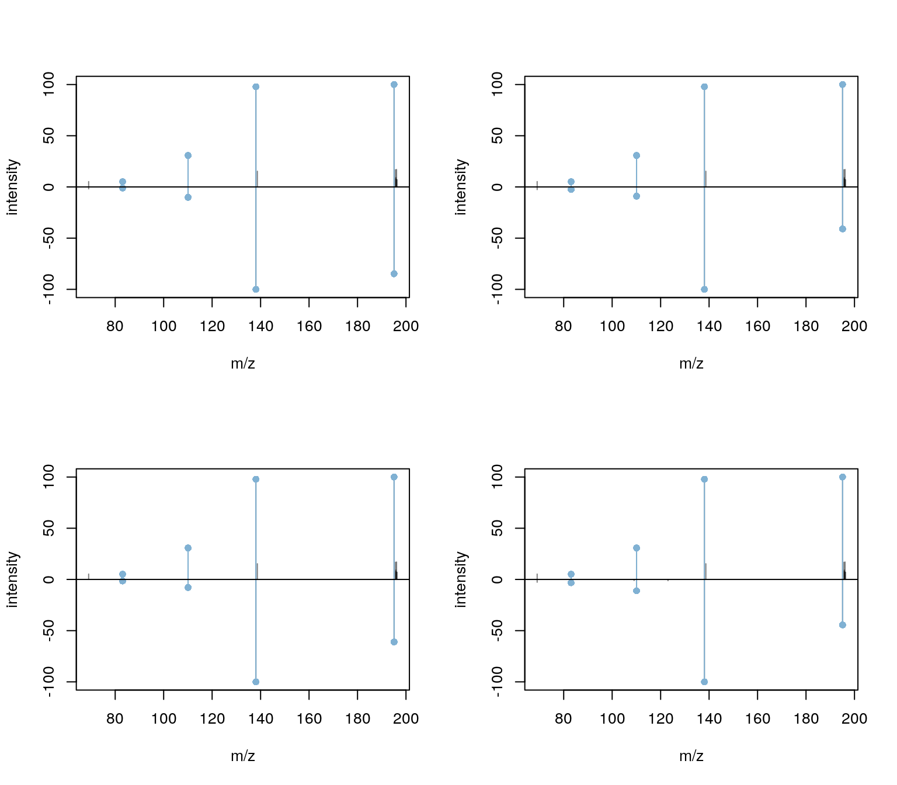

vignettes/annotation-use-cases.Rmd
annotation-use-cases.RmdThis documents provides use cases describing the annotation of untarget metabolomics and small compound datasets using functionality from the MetaboAnnotation, MetaboCoreUtils and CompoundDb packages. All data used in this document is available within the github repository https://github.com/jorainer/MetaboAnnotationTutorials. Additional use cases and examples can be found in the packages’ vignettes and workshops/tutorials. See section Package repositories and additional tutorials for links to the package repositories and tutorials.
The R packages as well as the example files used in this document can be installed with the R code below:
install.packages("BiocManager")
BiocManager::install("jorainer/MetaboAnnotationTutorials")The source code for this document along with the test data can be downloaded from the github repository https://github.com/jorainer/MetaboAnnotationTutorials with the command (or alternatively downloading the zip archive directly from the github page).
git clone https://github.com/jorainer/MetaboAnnotationTutorialsIn this example we annotate chromatographic peaks identified in a test sample provided within this repository first based only on their m/z values and then using their m/z and retention times against previously determined values for a set of pure standards. The test data represents LC-MS/MS measurements of a set of metabolite standards. In brief, aliquots for pure standards of 15 metabolites were solved in water and injected into a LC-MS system. Details are provided in the Material and Methods section in the main text.
Below we load the data which is distributed within the MetaboAnnotationTutorials package and perform the chromatographic peak detection using the xcms package.
library(xcms)
fl <- system.file("mzML", "HighIS_Mix07_CE20_POS.mzML",
package = "MetaboAnnotationTutorials")
std_data <- readMSData(fl, mode = "onDisk")We next perform the chromatographic peak detection using the centWave algorithm followed by a peak refinement to reduce the number of peak detection artifacts, such as split-peaks or overlapping peaks (see the LC-MS/MS data analysis with xcms vignette from the xcms package for details on the chromatographic peak detection settings).
#' Peak detection
cwp <- CentWaveParam(snthresh = 10, prefilter = c(3, 4000), ppm = 40,
peakwidth = c(2, 8), integrate = 2)
std_data <- findChromPeaks(std_data, param = cwp)
#' Peak refinement
std_data <- refineChromPeaks(
std_data, MergeNeighboringPeaksParam(expandRt = 3))In total 175 chromatographic peaks have been identified. This is even more than would be expected since the sample represents a mixture of 15 pure standards solved in water. Below we display the first 6 of the detected chromatographic peaks.
head(chromPeaks(std_data))## mz mzmin mzmax rt rtmin rtmax into intb
## CP001 355.28240 355.28193 355.28369 30.495 24.575 37.641 83909.909 78939.997
## CP002 358.98005 358.97954 358.98037 10.390 10.065 11.356 7002.894 6897.381
## CP003 413.26607 413.26573 413.26704 32.892 25.729 37.641 102217.289 100770.550
## CP004 301.14091 301.13962 301.14279 25.729 24.575 40.013 47095.520 44283.920
## CP005 80.02494 80.02419 80.02543 40.013 35.261 56.554 53223.003 53005.070
## CP006 63.99953 63.99950 63.99958 42.371 35.261 61.268 156775.850 156184.543
## maxo sn sample
## CP001 10329.126 25 1
## CP002 5138.685 32 1
## CP003 22355.266 90 1
## CP004 7085.818 40 1
## CP005 6082.308 181 1
## CP006 17705.469 242 1We next annotate these chromatographic peaks using only their m/z values. As a reference we load a CompDb database containing all compounds from the Human Metabolom Database (Wishart et al. 2018) version 5.0 which is also provided as a data release on the MetaboAnnotationTutorials github repository. The database was build from HMDB 5.0 (2021-11-02) using the CompoundDb package (see the package documentation for more information).
Below we download the database from github to a temporary folder.
#' Download the CompDb database using curl
library(curl)
dbname <- "CompDb.Hsapiens.HMDB.5.0.sqlite"
db_file <- file.path(tempdir(), dbname)
curl_download(
paste0("https://github.com/jorainer/MetaboAnnotationTutorials/",
"releases/download/2021-11-02/", dbname),
destfile = db_file)We next load the database using the CompoundDb package.
library(CompoundDb)
#' Load a CompDb database with compound annotation from HMDB
cdb <- CompDb(db_file)
cdb## class: CompDb
## data source: HMDB
## version: 5.0
## organism: Hsapiens
## compound count: 217776
## MS/MS spectra count: 64920Note: while we are here annotating chromatographic peaks from an xcms result object, it would also be possible to annotate LC-MS features using the same approach by simply exchanging the chromPeaks call with featureDefinitions. In addition, the annotation could also be performed on a SummarizedExperiment representing the preprocessing results which can be generated from an xcms result object using the quantify method.
We next extract all peaks from the xcms result object and annotate them using the matchMz function against all compounds from HMDB (the compound annotations can be extracted from the CompDb database with the compounds function). The reference database does not provide m/z values but only exact masses for each compound. Thus, in order to annotate our chromatographic peaks’ m/z values, m/z values for expected ions of the compounds need to be calculated first. With Mass2MzParam we can configure the parameters for the annotation. Parameter adducts allows to specify the adducts (ions) we expect to see mostly in the data set. For our example we assume to see mostly [M+H]+ and [M+Na]+ positive ions. With parameters tolerance and ppm we can finally define also the absolute and/or m/z relative acceptable difference, respectively, for m/z values to be considered matching.
library(MetaboAnnotation)
#' Get the chromatographic peaks and add a column with the peak_id
pks <- data.frame(peak_id = rownames(chromPeaks(std_data)),
chromPeaks(std_data))
#' Set parameters for the m/z-based annotation
param <- Mass2MzParam(adducts = c("[M+H]+", "[M+Na]+"),
tolerance = 0, ppm = 10)
#' Perform the matching
pks_match <- matchMz(
pks,
compounds(cdb, c("compound_id", "exactmass", "formula", "name")),
param = param)
pks_match## Object of class Matched
## Total number of matches: 697
## Number of query objects: 175 (112 matched)
## Number of target objects: 217776 (393 matched)The result object handles the potential many-to-many matching between chromatographic peaks (query) and reference (target) and contains all information from both the query and the target object along with the score for the match (in this case the difference between the m/z values). Below we list all available information in the result object.
colnames(pks_match)## [1] "peak_id" "mz" "mzmin"
## [4] "mzmax" "rt" "rtmin"
## [7] "rtmax" "into" "intb"
## [10] "maxo" "sn" "sample"
## [13] "target_compound_id" "target_name" "target_formula"
## [16] "target_exactmass" "adduct" "score"The n:m mapping is represented in the matches data frame. It maps each annotated query element to all matching target elements. Below we list the first 6 rows from that table. Column "score" provides the difference between the query and target m/z values (in Da).
## query_idx target_idx adduct score
## 1 1 6977 [M+H]+ 0.001888540
## 2 1 7006 [M+H]+ 0.001888540
## 3 1 158233 [M+H]+ 0.001888540
## 4 1 160274 [M+H]+ 0.001888540
## 5 1 170679 [M+H]+ 0.001888540
## 6 2 164617 [M+H]+ 0.003242238For users it’s however more convenient to extract annotation information with the matchedData function, that will return a data frame with all annotations. If query elements are annotated to more than one target element they will be listed in as many rows as there are matches. Not matching query elements are represented with a single row in the result table, containing NA for all annotations. Below we extract all annotations, restricting to some of the annotation columns.
matchedData(pks_match, c("peak_id", "target_name",
"target_formula", "adduct"))## DataFrame with 760 rows and 4 columns
## peak_id target_name target_formula adduct
## <character> <character> <character> <character>
## CP001 CP001 MG(0:0/18:2(9Z,12Z)/.. C21H38O4 [M+H]+
## CP001.1 CP001 MG(18:2(9Z,12Z)/0:0/.. C21H38O4 [M+H]+
## CP001.2 CP001 Glyceryl monolinoleate C21H38O4 [M+H]+
## CP001.3 CP001 2-Linoleoyl Glycerol C21H38O4 [M+H]+
## CP001.4 CP001 RIOPROSTIL C21H38O4 [M+H]+
## ... ... ... ... ...
## CPM186.9 CPM186 4-Ethoxy-p-menth-1-ene C12H22O [M+Na]+
## CPM186.10 CPM186 cis-3-Ethoxy-p-menth.. C12H22O [M+Na]+
## CPM187 CPM187 NA NA NA
## CPM188 CPM188 NA NA NA
## CPM189 CPM189 NA NA NAAs we can see, the number of rows of this data frame is much larger than the number of chromatographic peaks. Most peaks are in fact annotated to several possible compounds based on their m/z. The average number of compounds to which a chromatographic peak in this data is annotated is calculated below.
## [1] 6.223214Annotations in the result object are organized by query, annotations for individual query elements can thus be accessed very easily. Below we list all annotations for the first chromatographic peak.
matchedData(pks_match[1], c("peak_id", "target_name",
"target_formula", "adduct"))## DataFrame with 5 rows and 4 columns
## peak_id target_name target_formula adduct
## <character> <character> <character> <character>
## CP001 CP001 MG(0:0/18:2(9Z,12Z)/.. C21H38O4 [M+H]+
## CP001.1 CP001 MG(18:2(9Z,12Z)/0:0/.. C21H38O4 [M+H]+
## CP001.2 CP001 Glyceryl monolinoleate C21H38O4 [M+H]+
## CP001.3 CP001 2-Linoleoyl Glycerol C21H38O4 [M+H]+
## CP001.4 CP001 RIOPROSTIL C21H38O4 [M+H]+All compounds have thus the exact same chemical formula and hence, using only the m/z value, we can not discriminate between them or determine which would be the correct annotation. Considering also the retention times would allow a better annotation and increase its confidence.
For LC-MS experiments compounds are first chromatographically separated based on some property of the compound (other than their mass). Thus, also the retention times contain information that can improve the annotation. In this section we use information from a previous experiment in which pure standards were measured with the same LC-MS setup used to generate the present test data and in which the retention time as well as the ion (adduct) and its m/z value were determined. These reference values were thus empirically determined on the same instruments with the same setup and should thus help to get higher confidence annotations.
Below we load the reference retention time and m/z data for some of the measured standards.
fl <- system.file("txt", "std_ions.txt",
package = "MetaboAnnotationTutorials")
std_ions <- read.table(fl, sep = "\t", header = TRUE)
head(std_ions)## compound_id ion_adduct ion_rt ion_mz
## 1 HMDB0001539 [M+H]+ 176 203.1503
## 2 HMDB0000905 [M+H]+ 208 332.0754
## 3 HMDB0001847 [M+H]+ 35 195.0877
## 4 HMDB0001413 [M+H]+ 217 490.1224
## 5 HMDB0000562 [M+H]+ 87 114.0662
## 6 HMDB0000086 [M+H]+ 189 258.1101We can now annotate the chromatographic peaks using this reference data. We configure the matching using the MzRtParam, which allows to annotate query elements based on m/z and retention times. With ppm we define again the m/z-relative acceptable difference of the m/z values and with toleranceRt the absolute acceptable difference in measured retention times. The parameters mzColname and rtColname allow us to define the names of the columns in the query and target objects containing the m/z values and retention time values for the matching. Settings for ppm and toleranceRt should be adapted to the experimental setup, retention time difference could e.g. be larger for HILIC-based chromatographic separation. Below we use a difference of 7 seconds (since retention times in std_ions and in the xcms result are reported in seconds).
param <- MzRtParam(ppm = 10, toleranceRt = 7)
pks_match <- matchMz(pks, std_ions, param = param,
mzColname = c("mz", "ion_mz"),
rtColname = c("rt", "ion_rt"))
pks_match## Object of class Matched
## Total number of matches: 9
## Number of query objects: 175 (9 matched)
## Number of target objects: 19 (9 matched)In addition to supplying the reference (target) data as a data.frame we could also directly use an IonDb. This type of annotation object extends the above used CompDb database providing in addition to general compound annotations also information on measured ions including their retention times and m/z values. It is thus designed to contain reference annotation databases for specific LC-MS setups and MS instrumentation used in a lab. Below we create such an IonDb database (which will be saved in the present example to a temporary file) from the HMDB CompDb database and add our ion annotations to it.
#' Create an IonDb filling it with data from cdb.
idb <- IonDb(tempfile(), cdb)
#' Insert measured m/z and retention times for ions
idb <- insertIon(idb, std_ions)
idb## class: IonDb
## data source: HMDB
## version: 5.0
## organism: Hsapiens
## compound count: 217776
## MS/MS spectra count: 64920
## ion count: 19The advantage of such an annotation database over individual (text) file-based annotation approaches is obvious: along with the annotation data also metadata can be saved and the database can be versioned, which is crucial for reproducible workflows. Also, the database’s SQLite file is portable and can be distributed and used on different computers. In addition, it would also be possible to use a MySQL-based database system which would enable centralized annotation resources in a laboratory. More information on the creation and usage of annotation resources with the CompoundDb package is provided in its package vignettes which are also available here.
We can now annotate our peaks against that database using the same call as above, but providing the idb as target parameter.
pks_match <- matchMz(
pks, ions(idb, c("compound_id", "ion_adduct", "ion_mz", "ion_rt", "name")),
param = param, mzColname = c("mz", "ion_mz"),
rtColname = c("rt", "ion_rt"))
pks_match## Object of class Matched
## Total number of matches: 9
## Number of query objects: 175 (9 matched)
## Number of target objects: 19 (9 matched)In total 9 chromatographic peaks were annotated to an ion of one of the standards. We can identify the chromatographic peaks with available annotation using the whichQuery function, that returns their index in the query. Below we thus also subset the matched results to only those chromatographics peaks with an annotation.
whichQuery(pks_match)## [1] 61 68 74 86 88 131 142 148 162
pks_match <- pks_match[whichQuery(pks_match)]We next build a result table for the successfully annotated chromatographic peaks.
library(pander)
pandoc.table(as.data.frame(
matchedData(pks_match, c("peak_id", "target_name", "score", "score_rt"))),
style = "rmarkdown", split.tables = Inf)| peak_id | target_name | score | score_rt | |
|---|---|---|---|---|
| CP067 | CP067 | Caffeine | 0.0006847 | 0.261 |
| CP074 | CP074 | Creatinine | 0.0001926 | 0.238 |
| CP080 | CP080 | Sphingosine | 0.0003391 | 3.013 |
| CP094 | CP094 | L-Methionine | 0.0001487 | 6.839 |
| CP096 | CP096 | 1-Methyluric acid | 0.0002982 | 0.626 |
| CP143 | CP143 | 3-Methylhistidine | 0.0002466 | 0.734 |
| CP154 | CP154 | Asymmetric dimethylarginine | 0.0003642 | 3.688 |
| CP162 | CP162 | Glycerophosphocholine | 0.0003917 | 0.098 |
| CP176 | CP176 | Deoxyadenosine monophosphate | 0.0007856 | 2.337 |
Columns "score" and "score_rt" contain the difference between the query and the annotated target’s m/z (in Da) and retention time (in seconds), respectively.
Retention time is a valuable orthogonal information for metabolite identification, but chromatographic conditions are far from being standardized. Even when using nominally the same chromatographic system, meaning column and eluents, differences in retention times arise due to dead volumes, gradient delay volumes, etc. In GC-MS retention time indexing has been used to normalize for drifts in retention times by converting them into retention indices. A similar approach has been recently described for LC-MS (Stoffel et al. 2021) using N-Alkyl-pyridinium sulfonates as retention indexing substances. Their use allows to convert retention times into retention indices and to compare retention information across different LC-MS systems.
We first load data from an untargeted metabolomic experiments. This data has been completely processed. Each feature is identified by a unique name.
library(MetaboCoreUtils)
fl <- system.file("txt", "rti_ms_pos_features.txt",
package = "MetaboAnnotationTutorials")
ms1_features <- read.table(fl, header = TRUE, sep = "\t")
head(ms1_features)## Name mz rtime Cel_pure_1.B.1_01_21144
## 1 Cluster_00003 71.01397 1.527515 946.2993
## 2 Cluster_00004 72.33667 1.529377 1402.1213
## 3 Cluster_00006 86.37420 1.946073 7245.5283
## 4 Cluster_00018 66.03701 1.454697 1306.3455
## 5 Cluster_00025 71.03044 1.259239 256197.7500
## 6 Cluster_00030 80.03526 1.259666 242820.3125
## Cel_pure_1.B.1_01_21149 Cel_pure_1.B.1_01_21154 Cel_pure_1.B.1_01_21159
## 1 806.088 796.521 771.9626
## 2 1427.545 1334.492 1400.0985
## 3 8062.006 8196.895 8502.9092
## 4 1389.757 1338.029 1341.1783
## 5 238996.312 212299.125 242366.2188
## 6 209218.312 174476.219 223134.0000
## Cel_pure_1.B.1_01_21164
## 1 713.608
## 2 1503.299
## 3 9668.902
## 4 1584.487
## 5 239547.453
## 6 215851.828Likewise we load the information on the N-Alkyl-pyridinium sulfonates. The retention index is defined as the number of carbons in the alkyl chain times 100.
fl <- system.file("txt", "rti_ms_pos_naps.txt",
package = "MetaboAnnotationTutorials")
ms1_naps <- read.table(fl, header = TRUE, sep = "\t")
head(ms1_naps)## rtime rindex
## 1 NA 100
## 2 1.5 200
## 3 1.7 300
## 4 2.6 400
## 5 5.9 500
## 6 10.3 600The relationship between the retention time and retention index can be plotted.
plot(ms1_naps)We can use the N-Alkly-pyridinium sulfonates to convert the retention times of the measured features using the indexRtime function. By default linear interpolation is used for conversion, but other (custom) functions can be defined if required.
ms1_features$rindex <- indexRtime(ms1_features$rtime, ms1_naps)This data can then be annotated using reference databases. Two different databases are used. One was obtained on a UHPLC column and one on a HPLC column of the same column chemistry. The untargeted data was obtained from a HPLC column, but using a different LC hardware, resulting in different absolute retention times.
fl <- system.file("txt", "rti_db_hplc.txt",
package = "MetaboAnnotationTutorials")
db_hplc <- read.table(fl, header = TRUE, sep = "\t",
quote = "", comment.char = "")
fl <- system.file("txt", "rti_db_uhplc.txt",
package = "MetaboAnnotationTutorials")
db_uhplc <- read.table(fl, header = TRUE, sep = "\t",
quote = "", comment.char = "")Next we can define the Mass2MzRtParam similar to above. We will use an absolute error of 10 retention index units and use [M+H]+and [M+Na]+ adducts.
match_param <- Mass2MzRtParam(adducts = c("[M+H]+", "[M+Na]+"),
tolerance = 0.005,
toleranceRt = 10)Matching can now be performed. Important is that the column with the retention index needs to be defined using rtColname. Matching is performed against both databases and results are then filtered to only contain features with at least one match.
matches_hplc <- matchMz(ms1_features,
db_hplc,
match_param,
massColname = "exact.mass",
mzColname = "mz",
rtColname = "rindex")
matches_hplc <- matches_hplc[whichQuery(matches_hplc)]
matches_uhplc <- matchMz(ms1_features,
db_uhplc,
match_param,
massColname = "exact.mass",
mzColname = "mz",
rtColname = "rindex")
matches_uhplc <- matches_uhplc[whichQuery(matches_uhplc)]We next build a result table for the successfully annotated chromatographic peaks. First for the results matching with the HPLC database.
library(pander)
pandoc.table(head(as.data.frame(
matchedData(matches_hplc, c("Name", "mz", "rindex", "target_name",
"adduct", "score", "score_rt")))),
style = "rmarkdown", split.tables = Inf)| Name | mz | rindex | target_name | adduct | score | score_rt | |
|---|---|---|---|---|---|---|---|
| 24 | Cluster_00116 | 132.1 | 328.8 | 5-AMINOLEVULINATE | [M+H]+ | 0.005076 | 1.226 |
| 24.1 | Cluster_00116 | 132.1 | 328.8 | N-ACETYLALANINE | [M+H]+ | 0.005076 | 1.226 |
| 395 | Cluster_01443 | 125.1 | 418.4 | 4-METHYLCATECHOL | [M+H]+ | 0.0002352 | 8.425 |
| 434 | Cluster_01544 | 133 | 392.7 | GLUTARATE | [M+H]+ | 0.000176 | 0.733 |
| 434.1 | Cluster_01544 | 133 | 392.7 | GLUTARATE | [M+H]+ | 0.000176 | 2.267 |
| 469 | Cluster_01596 | 138.1 | 582.2 | SALICYLAMIDE | [M+H]+ | 0.0001774 | 1.791 |
Then for matching with the UPLC database.
library(pander)
pandoc.table(head(as.data.frame(
matchedData(matches_uhplc, c("Name", "mz", "rindex", "target_name",
"adduct", "score", "score_rt")))),
style = "rmarkdown", split.tables = Inf)| Name | mz | rindex | target_name | adduct | score | score_rt | |
|---|---|---|---|---|---|---|---|
| 24 | Cluster_00116 | 132.1 | 328.8 | N-ACETYLALANINE | [M+H]+ | 0.005076 | 4.774 |
| 380 | Cluster_01397 | 123 | 679.6 | BENZOATE | [M+H]+ | 0.0003409 | 1.38 |
| 434 | Cluster_01544 | 133 | 392.7 | GLUTARATE | [M+H]+ | 0.000176 | 4.733 |
| 434.1 | Cluster_01544 | 133 | 392.7 | GLUTARATE | [M+H]+ | 0.000176 | 3.733 |
| 469 | Cluster_01596 | 138.1 | 582.2 | 4-AMINOBENZOATE | [M+H]+ | 0.0001774 | 2.791 |
| 469.1 | Cluster_01596 | 138.1 | 582.2 | ANTHRANILATE | [M+H]+ | 0.0001774 | 2.791 |
In addition to \(MS^1\) annotation described in the previous section, it is also possible to annotate features (or chromatographic peaks) by comparing experimentally measured \(MS^2\) (MS/MS) spectra against reference spectra. Such annotation can be performed using the matchSpectra from the MetaboAnnotation package that takes Spectra objects (with \(MS^2\) spectra) as query and target parameters. Such Spectra objects can be either imported from a variety of input formats, including MGF, MSP, mzML, mzXML or netCDF files, extracted from xcms result objects or even retrieved from databases such as MassBank (see also the tutorials from SpectraTutorials for more examples and use cases).
To illustrate this, we will extract in this section \(MS^2\) spectra for the annotated chromatographic peaks from the previous section and compare them against reference \(MS^2\) spectra from HMDB. Annotation reliability can be increased if, in addition to m/z and retention time, also the \(MS^2\) spectra for a chromatographic peak or a feature matches the reference spectrum from a pure standard.
We first extract all \(MS^2\) spectra for the annotated chromatographic peaks using the chromPeakSpectra function from the xcms result object. This will return all \(MS^2\) spectra with the precursor m/z and retention time within the m/z ranges and retention time ranges of the detected chromatographic peaks. For an xcms result object containing also correspondence results (i.e. grouped chromatographic peaks across samples, also referred to as features) the featureSpectra function could be used instead.
std_spectra <- chromPeakSpectra(std_data, return.type = "Spectra",
peaks = pks_match$peak_id)
std_spectra## MSn data (Spectra) with 11 spectra in a MsBackendMzR backend:
## msLevel rtime scanIndex
## <integer> <numeric> <integer>
## F1.S107 2 35.650 107
## F1.S193 2 66.622 193
## F1.S224 2 78.600 224
## F1.S127 2 38.323 127
## F1.S159 2 50.239 159
## F1.S581 2 184.743 581
## F1.S649 2 197.112 649
## F1.S548 2 175.749 548
## F1.S600 2 188.408 600
## F1.S707 2 209.046 707
## F1.S760 2 221.347 760
## ... 38 more variables/columns.
##
## file(s):
## HighIS_Mix07_CE20_POS.mzMLFor some of the chromatographic peaks we have more than one \(MS^2\) spectrum, but in total we have \(MS^2\) spectra only for 7 chromatographic peaks. Below we count the number of spectra per peak.
table(std_spectra$peak_id)##
## CP067 CP074 CP080 CP143 CP154 CP162 CP176
## 1 2 2 2 1 1 2Before matching the spectra we are cleaning our experimental spectra removing peaks with an intensity lower than 5% of a spectra’s highest peak intensity and removing spectra with less than 3 peaks.
#' Define a function to remove low intensity peaks
low_int <- function(x, ...) {
x > max(x, na.rm = TRUE) * 0.05
}
#' Remove peaks with an intensity below 5% of BPI
std_spectra <- filterIntensity(std_spectra, intensity = low_int)
#' Remove peaks with less than 3 peaks
std_spectra <- std_spectra[lengths(std_spectra) > 2]
std_spectra## MSn data (Spectra) with 8 spectra in a MsBackendMzR backend:
## msLevel rtime scanIndex
## <integer> <numeric> <integer>
## F1.S107 2 35.650 107
## F1.S127 2 38.323 127
## F1.S159 2 50.239 159
## F1.S581 2 184.743 581
## F1.S649 2 197.112 649
## F1.S548 2 175.749 548
## F1.S600 2 188.408 600
## F1.S707 2 209.046 707
## ... 38 more variables/columns.
##
## file(s):
## HighIS_Mix07_CE20_POS.mzML
## Lazy evaluation queue: 1 processing step(s)
## Processing:
## Remove peaks based on their intensities and a user-provided function in spectra of MS level(s) 2. [Wed Jan 26 14:08:01 2022]In addition, we scale the peak intensities within each spectrum to values between 0 and 100. This is mostly for visualization reason, since most spectra similarity scoring algorithms are independent of absolute peak intensities.
#' Define a function to *scale* the intensities
scale_int <- function(x, ...) {
maxint <- max(x[, "intensity"], na.rm = TRUE)
x[, "intensity"] <- 100 * x[, "intensity"] / maxint
x
}
#' *Apply* the function to the data
std_spectra <- addProcessing(std_spectra, scale_int)Below we match now these cleaned spectra against the reference spectra from HMDB. We configure the matching using the CompareSpectraParam allowing m/z differences of 50ppm between peaks from a query and a target spectrum. Since HMDB does not provide precursor m/z we in addition have to disable the additional matching filter (i.e. set requirePrecursor = FALSE), which has however a negative impact on the performance of the comparisons. By default, spectra similarities (calculated with the normalized dot product) higher than 0.7 will be considered matching.
spectra_match <- matchSpectra(
std_spectra, Spectra(cdb),
param = CompareSpectraParam(ppm = 50, requirePrecursor = FALSE))
spectra_match## Object of class MatchedSpectra
## Total number of matches: 27
## Number of query objects: 8 (4 matched)
## Number of target objects: 64920 (27 matched)Thus, in total 4 of the query spectra were matched with 27. Below we create a result table for this matching.
res <- spectraData(spectra_match,
c("peak_id", "target_compound_id", "score"))
cmp_id <- unique(res$target_compound_id)
cmp_id <- cmp_id[!is.na(cmp_id)]
cmps <- compounds(cdb, filter = ~ compound_id == cmp_id, "name")
rownames(cmps) <- cmps$compound_id
res$name <- cmps[res$target_compound_id, "name"]
rownames(res) <- NULL
pandoc.table(as.data.frame(res),
style = "rmarkdown", split.tables = Inf)| peak_id | target_compound_id | score | name |
|---|---|---|---|
| CP067 | HMDB0001847 | 0.7258 | Caffeine |
| CP067 | HMDB0001847 | 0.705 | Caffeine |
| CP067 | HMDB0001847 | 0.7016 | Caffeine |
| CP067 | HMDB0001847 | 0.7046 | Caffeine |
| CP080 | NA | NA | NA |
| CP080 | HMDB0253992 | 0.7589 | Laurocapram |
| CP080 | HMDB0253992 | 0.7789 | Laurocapram |
| CP143 | NA | NA | NA |
| CP143 | HMDB0000479 | 0.8739 | 3-Methylhistidine |
| CP143 | HMDB0000479 | 0.8739 | 3-Methylhistidine |
| CP154 | NA | NA | NA |
| CP162 | NA | NA | NA |
| CP176 | HMDB0000034 | 0.7165 | Adenine |
| CP176 | HMDB0000034 | 0.7094 | Adenine |
| CP176 | HMDB0000034 | 0.7092 | Adenine |
| CP176 | HMDB0000034 | 0.7133 | Adenine |
| CP176 | HMDB0000034 | 0.7165 | Adenine |
| CP176 | HMDB0000034 | 0.7123 | Adenine |
| CP176 | HMDB0000034 | 0.7165 | Adenine |
| CP176 | HMDB0000034 | 0.7165 | Adenine |
| CP176 | HMDB0000034 | 0.7139 | Adenine |
| CP176 | HMDB0000050 | 0.7067 | Adenosine |
| CP176 | HMDB0000050 | 0.7165 | Adenosine |
| CP176 | HMDB0000101 | 0.7165 | Deoxyadenosine |
| CP176 | HMDB0000905 | 0.9523 | Deoxyadenosine monophosphate |
| CP176 | HMDB0000905 | 0.8143 | Deoxyadenosine monophosphate |
| CP176 | HMDB0000905 | 0.7407 | Deoxyadenosine monophosphate |
| CP176 | HMDB0000905 | 0.9136 | Deoxyadenosine monophosphate |
| CP176 | HMDB0000905 | 0.9523 | Deoxyadenosine monophosphate |
| CP176 | HMDB0000905 | 0.9524 | Deoxyadenosine monophosphate |
| CP176 | HMDB0001983 | 0.7086 | 5’-Deoxyadenosine |
Matching results can also be very easily visualized with the plotSpectraMirror function. Below we show the results for the first peak (Caffeine). The upper spectrum represents the query, the lower the target (reference) spectrum.
plotSpectraMirror(spectra_match[1])
The results seem to be reasonable. For the second peak (third spectrum) the match was based however on a single peak.
plotSpectraMirror(spectra_match[3])Note that we could now also add some of the (cleaned and annotated) \(MS^2\) spectra from the present test set, to the IonDb using the insertSpectra function. This enables generation of lab-internal reference databases including also MS/MS spectra.
\(MS^1\)-based annotations can be performed on any data.frame or similar that provides \(m/z\) and/or retention time values. For \(MS^2\)-based annotations a Spectra object would be needed, and that can be imported from a variety of formats. In this section we show how pre-processing results from an external tool (in this case MZmine) can be imported and used as input for MetaboAnnotation.
The test data we are using is one of the example data sets for GNPS Feature-Based Molecular Networking (Nothias et al. 2020). A description on how this data was generated is provided in the GNPS Feature-Based Molecular Networking documentation. The data set consists of feature abundances (along with retention time and m/z values) and \(MS^2\) spectra for these features. These example files are distributed through the github repository of the GNPS documentation https://github.com/CCMS-UCSD/GNPSDocumentation.git.
Below we first download the feature table (in csv format) from the above mentioned repository to a temporary file.
f_file <- "MZmine-GNPS_AG_test_featuretable.csv"
url <- paste0("https://raw.githubusercontent.com/CCMS-UCSD/GNPSDocumentation",
"/master/docs/tutorials/AG_tutorial_files/")
curl_download(paste0(url, f_file),
destfile = file.path(tempdir(), f_file))We next load this file into R using the base read.csv function.
We can now use this file as an input for \(MS^1\)-based annotation, as shown in section Annotation using m/z values above, and match the m/z values of the features against HMDB assuming [M+H]+ and [M+Na]+ adducts. With parameter mzColname we define the column in the input file containing the m/z values. For MZmine this is column "row m/z".
param <- Mass2MzParam(adducts = c("[M+H]+", "[M+Na]+"), ppm = 10)
f_match <- matchMz(
ftable,
compounds(cdb, c("compound_id", "exactmass", "formula", "name")),
param = param,
mzColname = "row m/z")
f_match## Object of class Matched
## Total number of matches: 31333
## Number of query objects: 3443 (2251 matched)
## Number of target objects: 217776 (13194 matched)For 2251 of the in total 3443 features a compound matching the feature’s m/z was found.
\(MS^2\) spectra can be exported from MZmine in mgf file format. Below we download the MGF file with all \(MS^2\) spectra for the features from the example above to a temporary folder.
s_file <- "MZmine-GNPS_AG_test_GNPS.mgf"
curl_download(paste0(url, s_file),
destfile = file.path(tempdir(), s_file))Files in MGF format can be imported with the MsBackendMgf package. Below we use this package to create a Spectra object with all spectra from the example file.
library(MsBackendMgf)
sps_mgf <- Spectra(file.path(tempdir(), s_file),
source = MsBackendMgf())By default all data fields from the original MGF file are imported. Thus, the Spectra object contains also a variable called FEATURE_ID with the identifiers for the features the spectra are associated with.
head(sps_mgf$FEATURE_ID)## [1] "1" "2" "3" "4" "6" "7"This Spectra object could then simply be used as in input parameter to the matchSpectra function as shown in the \(MS^2\) annotation section above to e.g. identify matches with reference spectra from HMDB.
MsCoreUtils package: https://rformassspectrometry.github.io/MsCoreUtils/
MetaboCoreUtils package: https://rformassspectrometry.github.io/MetaboCoreUtils/
Spectra package: https://rformassspectrometry.github.io/Spectra/
MetaboAnnotation package: https://rformassspectrometry.github.io/MetaboAnnotation/
CompoundDb package: https://rformassspectrometry.github.io/CompoundDb/
The R version and versions of used packages are listed below.
## R version 4.1.2 (2021-11-01)
## Platform: x86_64-pc-linux-gnu (64-bit)
## Running under: Ubuntu 20.04.3 LTS
##
## Matrix products: default
## BLAS/LAPACK: /usr/lib/x86_64-linux-gnu/openblas-pthread/libopenblasp-r0.3.8.so
##
## locale:
## [1] LC_CTYPE=en_US.UTF-8 LC_NUMERIC=C
## [3] LC_TIME=en_US.UTF-8 LC_COLLATE=en_US.UTF-8
## [5] LC_MONETARY=en_US.UTF-8 LC_MESSAGES=C
## [7] LC_PAPER=en_US.UTF-8 LC_NAME=C
## [9] LC_ADDRESS=C LC_TELEPHONE=C
## [11] LC_MEASUREMENT=en_US.UTF-8 LC_IDENTIFICATION=C
##
## attached base packages:
## [1] stats4 stats graphics grDevices utils datasets methods
## [8] base
##
## other attached packages:
## [1] MsBackendMgf_1.2.0 Spectra_1.5.7 MetaboCoreUtils_1.2.0
## [4] pander_0.6.4 MetaboAnnotation_0.99.3 CompoundDb_0.99.4
## [7] AnnotationFilter_1.18.0 curl_4.3.2 xcms_3.16.1
## [10] MSnbase_2.20.4 ProtGenerics_1.26.0 S4Vectors_0.32.3
## [13] mzR_2.28.0 Rcpp_1.0.8 Biobase_2.54.0
## [16] BiocGenerics_0.40.0 BiocParallel_1.28.3 knitr_1.37
## [19] BiocStyle_2.22.0
##
## loaded via a namespace (and not attached):
## [1] colorspace_2.0-2 rjson_0.2.21
## [3] ellipsis_0.3.2 rprojroot_2.0.2
## [5] XVector_0.34.0 GenomicRanges_1.46.1
## [7] base64enc_0.1-3 fs_1.5.2
## [9] clue_0.3-60 affyio_1.64.0
## [11] DT_0.20 bit64_4.0.5
## [13] fansi_1.0.2 xml2_1.3.3
## [15] codetools_0.2-18 ncdf4_1.19
## [17] doParallel_1.0.16 cachem_1.0.6
## [19] impute_1.68.0 robustbase_0.93-9
## [21] jsonlite_1.7.3 dbplyr_2.1.1
## [23] cluster_2.1.2 vsn_3.62.0
## [25] png_0.1-7 BiocManager_1.30.16
## [27] compiler_4.1.2 assertthat_0.2.1
## [29] Matrix_1.4-0 fastmap_1.1.0
## [31] lazyeval_0.2.2 limma_3.50.0
## [33] htmltools_0.5.2 tools_4.1.2
## [35] gtable_0.3.0 glue_1.6.0
## [37] GenomeInfoDbData_1.2.7 affy_1.72.0
## [39] RANN_2.6.1 dplyr_1.0.7
## [41] rsvg_2.1.2 MALDIquant_1.21
## [43] jquerylib_0.1.4 pkgdown_2.0.2.9000
## [45] vctrs_0.3.8 preprocessCore_1.56.0
## [47] iterators_1.0.13 xfun_0.29
## [49] stringr_1.4.0 lifecycle_1.0.1
## [51] XML_3.99-0.8 DEoptimR_1.0-10
## [53] zlibbioc_1.40.0 MASS_7.3-55
## [55] scales_1.1.1 ragg_1.2.1
## [57] pcaMethods_1.86.0 MatrixGenerics_1.6.0
## [59] parallel_4.1.2 SummarizedExperiment_1.24.0
## [61] MassSpecWavelet_1.60.0 RColorBrewer_1.1-2
## [63] yaml_2.2.1 memoise_2.0.1
## [65] gridExtra_2.3 ggplot2_3.3.5
## [67] MsFeatures_1.2.0 sass_0.4.0
## [69] stringi_1.7.6 RSQLite_2.2.9
## [71] highr_0.9 desc_1.4.0
## [73] foreach_1.5.1 GenomeInfoDb_1.30.0
## [75] rlang_0.4.12 pkgconfig_2.0.3
## [77] systemfonts_1.0.3 matrixStats_0.61.0
## [79] bitops_1.0-7 mzID_1.32.0
## [81] evaluate_0.14 lattice_0.20-45
## [83] purrr_0.3.4 ChemmineR_3.46.0
## [85] htmlwidgets_1.5.4 bit_4.0.4
## [87] tidyselect_1.1.1 plyr_1.8.6
## [89] magrittr_2.0.1 R6_2.5.1
## [91] IRanges_2.28.0 generics_0.1.1
## [93] DelayedArray_0.20.0 DBI_1.1.2
## [95] pillar_1.6.4 MsCoreUtils_1.6.0
## [97] RCurl_1.98-1.5 tibble_3.1.6
## [99] crayon_1.4.2 utf8_1.2.2
## [101] rmarkdown_2.11 grid_4.1.2
## [103] blob_1.2.2 digest_0.6.29
## [105] textshaping_0.3.6 munsell_0.5.0
## [107] bslib_0.3.1